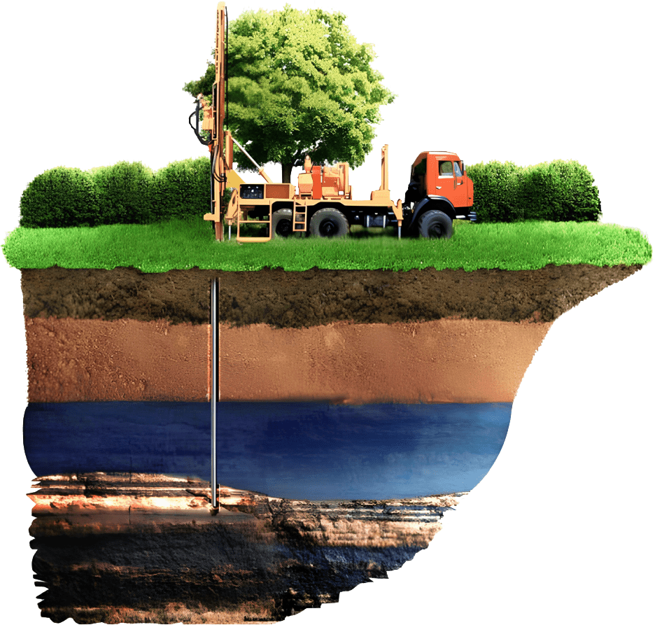
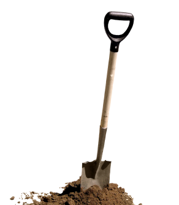

Инженерно-геологические изыскания
За 8 дней исследуем геологию вашего участка
Оставляйте заявку – мы свяжемся с вами, ответим на все вопросы и подберем удобное время
заказать изыскания
Ответьте на 3 простых вопроса,
чтобы узнать конечную стоимость изысканий в вашем случае
Что такое инженерно-геологические изыскания?
«Геология участка» — это изучение рельефа, строения, состава, состояния и свойств грунтов основания, а также уровня и характера распространения грунтовых вод
Без такого исследования
строить дом просто-напросто
опасно

«А что будет, если таких изысканий не проводить?»
Если повезет, то ничего.
Но давайте говорить начистоту. Стоимость изысканий в рамках
бюджета на постройку дома – сумма небольшая.
Стоит того, чтобы спать спокойно.
Иначе вы рискуете однажды проснуться
в своем новеньком доме мечты и обнаружить
на фундаменте трещину
1
А через год эта трещина пойдет выше, на стык стен. Через 3 – просядет угол дома, через 5 – угол обрушится полностью
2
Позже выяснится, что в зоне влияния фундамента, на глубине 3-х метров у вас торф или «плывун», на котором строить надо было по-другому.
3
А даже если решите бороться с проблемами на ранних этапах, то с удивлением обнаружите,
что только обследование несущей конструкции вашего дома стоит от 150.000 рублей (в 3 раза дороже геологии), не говоря уже о ремонте
что только обследование несущей конструкции вашего дома стоит от 150.000 рублей (в 3 раза дороже геологии), не говоря уже о ремонте
Геологические изыскания — защита вашего дома
Это ваше спокойствие и понимание, что вы построите дом и с ним все точно будет хорошо. Как говорится «чтобы внукам хватило»
Вы перед строительством получите объективную картину по грунтам на вашем участке. Будете знать несущую способность грунта, его физические и механические свойства
И сможете предупредить все возможные проблемы, зная ключевые параметры
Состав, глубину
распространения
и свойства разных
слоев;
распространения
и свойства разных
слоев;
Наличие специфических
и «слабых» грунтов,
требующих особого
внимания;
и «слабых» грунтов,
требующих особого
внимания;
Глубину промерзания
и степень пучинистости
грунтов;
и степень пучинистости
грунтов;
Уровень залегания
грунтовых вод
и характер их
распространения.
грунтовых вод
и характер их
распространения.
Ответьте на 3 вопроса, чтобы узнать конечную стоимость исследования грунтов на вашем участке
узнать цену
Исходя из исследования
уже принимаются решения
по фундаменту и подготовительным мероприятиям.
уже принимаются решения
по фундаменту и подготовительным мероприятиям.
Например, если вода высоко — сделать гидроизоляцию или дренаж. Если грунты пучинистые — сделать отсыпку песком.
А может быть грунт вовсе непригоден для строительства и его следует полностью вынуть и заменить
А может быть грунт вовсе непригоден для строительства и его следует полностью вынуть и заменить
А еще геология — это ваша возможность
сэкономить до 1.000.000₽
сэкономить до 1.000.000₽
Проектировщики почти всегда делают все с огромным запасом, потому что несут ответственность перед вами.
Буквально закапывают ваши деньги в землю.
Например, закладывают в проект ж/б сваи + ростверк
или плиту. А мы по результатам исследования выясняем, что мелкозаглубленного ленточного фундамента — более чем достаточно.
или плиту. А мы по результатам исследования выясняем, что мелкозаглубленного ленточного фундамента — более чем достаточно.

Стандартная стоимость изыскания у нас — 45.000₽
Это средняя цена 1 кубометра готового фундамента в Москве и МО.
Это средняя цена 1 кубометра готового фундамента в Москве и МО.
То есть вы за цену 1 кубометра сможете сэкономить 5, 10, 20м3
Мы исследуем ваш участок и подготовим отчет за 8 дней
Вы платите только после получения отчета на руки
Выезжаем на следующий день после обращения
(иногда даже день в день)
(иногда даже день в день)
Команде более 5 лет, а только за прошлый год мы
сделали 482 изыскания
сделали 482 изыскания
Свои буровые установки, собственная лаборатория и 12 буровых бригад
Посмотрите видео того, как мы работаем и проводим исследования
И что очень важно, всегда бурим минимум 3 скважины глубиной минимум 8 метров
Почему это важно?
Ну, во-первых, меньше — просто-напросто неинформативно. Невозможно сложить объемную картину по 2-м точкам, и зона влияния фундамента как правило больше 4-6 метров.
А во-вторых, так положено. Это требование нормативных документов Минстроя: минимальная глубина скважин от подошвы фундамента – 6 метров + 2 метра минимальная глубина заложения фундамента (обязательно ниже глубины сезонного промерзания грунтов).
А во-вторых, так положено. Это требование нормативных документов Минстроя: минимальная глубина скважин от подошвы фундамента – 6 метров + 2 метра минимальная глубина заложения фундамента (обязательно ниже глубины сезонного промерзания грунтов).
Вообще, строительство и предпроектные изыскания — очень чувствительная сфера,
а правила часто написаны кровью, поэтому…
а правила часто написаны кровью, поэтому…
…мы работаем
официально,
с учетом всех норм и требований Минстроя РФ
В штате специалисты, состоящие
в НРС*, а средний опыт
сотрудников от 10 лет
в НРС*, а средний опыт
сотрудников от 10 лет
Вы застрахованы от нашей ошибки на 25 млн. ₽ по СРО
Мы работаем по договору и даже выдаем кассовый чек, чего не делают 90% конкурентов
Этапы работы
01
Вы отвечаете на 3 простых вопроса
и получаете расчет стоимости
изыскания
и получаете расчет стоимости
изыскания
02
Мы выбираем удобное
для вас время
для вас время
03
Команда специалистов
выезжает на участок,
намечает точки для бурения
выезжает на участок,
намечает точки для бурения
04
Бурят, берут пробы
грунта для анализа
грунта для анализа
05
Передают их
в лабораторию
для исследования
в лабораторию
для исследования
06
Информация по объекту
и протокол исследования
поступает геологу, и он
составляет отчет
и протокол исследования
поступает геологу, и он
составляет отчет
07
Либо высылаем ссылку на оплату
и чек на электронную почту. Либо
сами приезжаем с распечатанным
отчетом и кассовым аппаратом
и чек на электронную почту. Либо
сами приезжаем с распечатанным
отчетом и кассовым аппаратом
На все уходит 8 рабочих дней,
а срок зафиксирован в договоре
выбрать дату
а срок зафиксирован в договоре
«И что мне с этим отчетом делать?»
Для не специалиста отчет действительно непонятен, и «читать» его нужно уметь.
Поэтому для наших клиентов мы расшифровываем отчет
и выдаем рекомендации по фундаменту, основанные
на экспертной оценке и лабораторных исследованиях.
То есть, вы будете видеть объективную картину и понимать, насколько оптимальные решения выбирает ваш проектировщик или строительная компания
и выдаем рекомендации по фундаменту, основанные
на экспертной оценке и лабораторных исследованиях.
То есть, вы будете видеть объективную картину и понимать, насколько оптимальные решения выбирает ваш проектировщик или строительная компания
Поэтому для наших клиентов мы расшифровываем отчет
и выдаем рекомендации по фундаменту, основанные
на экспертной оценке и лабораторных исследованиях.
То есть, вы будете видеть объективнуюкартину и понимать, насколько оптимальные решения выбирает ваш проектировщик или строительная компания
То есть, вы будете видеть объективнуюкартину и понимать, насколько оптимальные решения выбирает ваш проектировщик или строительная компания